Apollo-era technical illustration
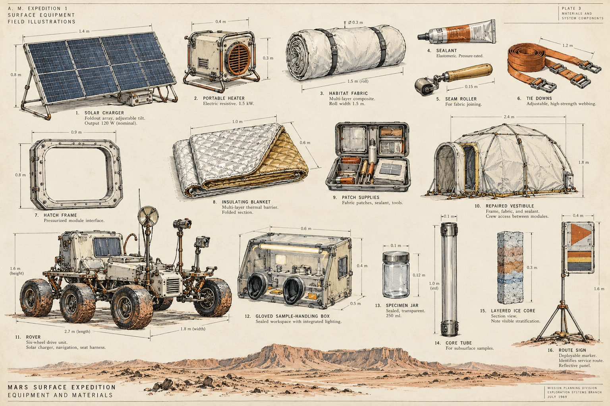
Certified spacecraft equipment plates: ink contours, measured views, sparse warm washes, callouts.
Production issue: Strong parts-to-assembly storytelling; dimension lines and microtype must be kept OUT of the actual inventory icons.
Historical visual references: NASA, Project Apollo Technical Diagrams Apollo Lunar Module Documentation
Polar expedition sketchbook
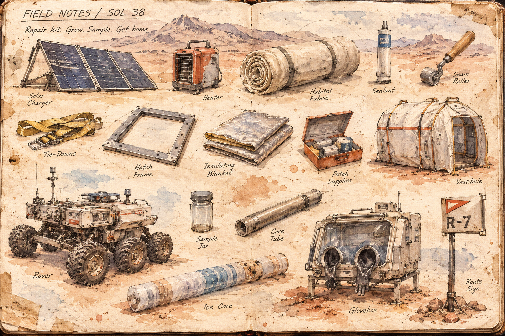
Firsthand expedition notebook: loose pencil, watercolor, weathered paper, observations and scraps.
Production issue: Perfect for scientific discovery and improvisation; weak small-item contrast and inconsistent viewpoints require care.
Historical visual references: Natural History Museum, Edward Wilson notebooks National Archives, Russell W. Porter sketches
Architectural / industrial isometric
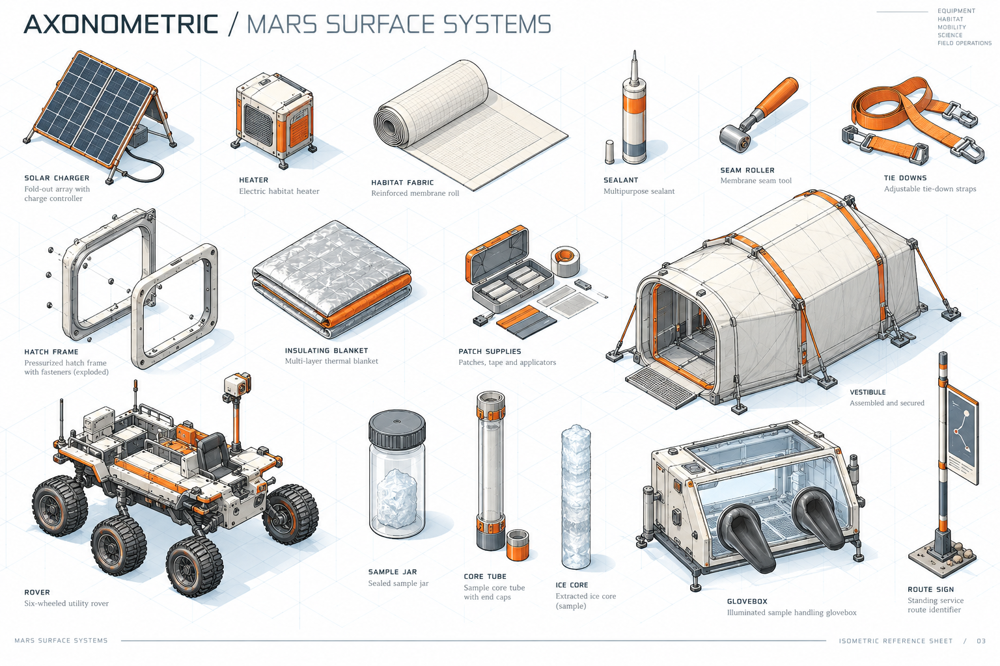
Strict parallel projection, precise construction lines, exploded subassemblies, white ground and blue grid.
Production issue: Excellent for compound objects and visible add-ons; rigid viewpoint should not turn every thin object into a tiny mark.
Historical visual references: Patterson-Kelley, exploded/isometric assembly diagram The Henry Ford, engineering part drawings
Photorealistic field objects
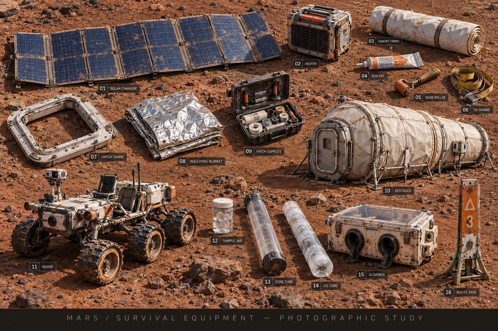
Physical props photographed in raking Martian daylight: accurate surface materials, real dust and contact shadows.
Production issue: Immediate material presence; detail and consistent regeneration of 200 components are the major production burdens.
Historical visual references: NASA/JPL, Perseverance rover components NASA/JPL, 33 Mars sample tubes
Mid-century industrial catalog
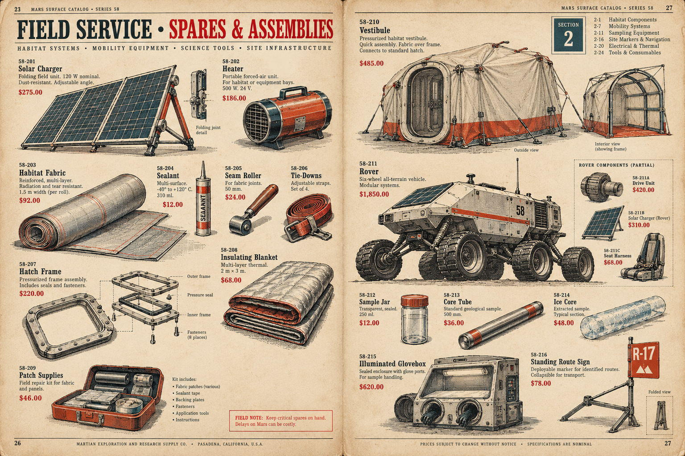
1950s service-parts trade literature: engraved machinery, red price stamps, structured numbering, cream stock.
Production issue: An unusually good fit for a combination game: part identity, assembly relationships and replacement components.
Historical visual references: Museums Victoria, 1956 industrial equipment catalog General Radio Catalog, 1956 (BAMA archive)
Soviet space-age book illustration
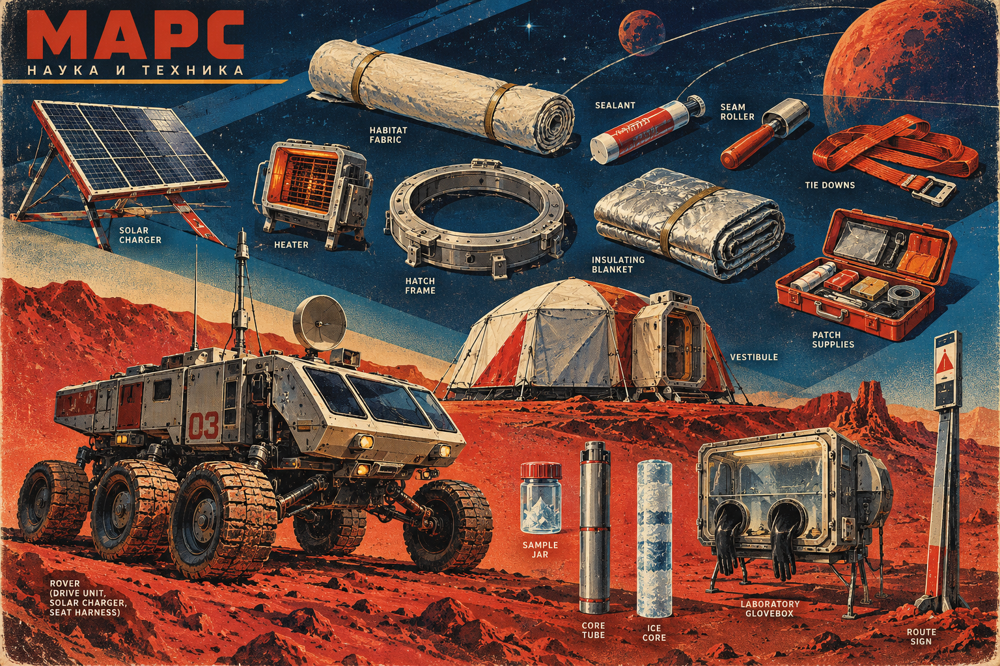
1950s-60s illustrated science optimism: poster lithography, cobalt night, vermilion terrain, geometric diagonals.
Production issue: Gives every discovery a visionary quality; a heroic poster can become too busy around utilitarian small parts.
Historical visual references: Tekhnika Molodezhi visual history Soviet space artist Andrei Sokolov reference (same essay)
Golden-age science-fiction pulp
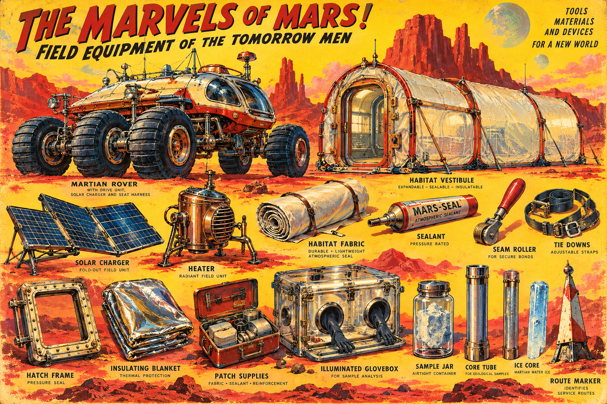
1920s-40s magazine art: saturated yellows and reds, fantastically exaggerated but lovingly constructed machines.
Production issue: Beautiful sense of adventure; treat scale drama and fantasy shape language carefully in a technically grounded story.
Historical visual references: Science Fiction Encyclopedia, Frank R. Paul Amazing Stories, early cover art gallery
1970s paperback science-fiction art
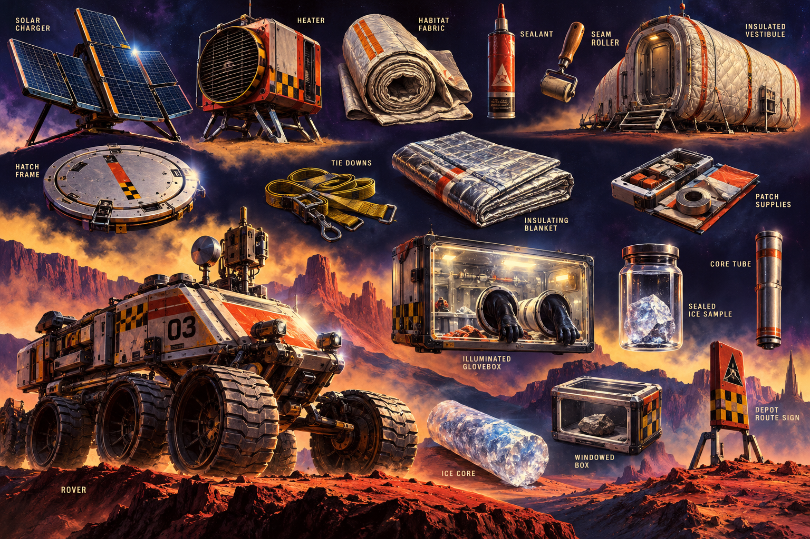
Bulky industrial hardware, extravagant painted striping, dense airbrushed mass and cinematic deep-space lighting.
Production issue: Very strong vehicle and heavy equipment silhouettes; a jar or sealant tube may struggle to sustain its visual weight.
Historical visual references: Science Fiction Encyclopedia, Chris Foss Science Fiction Encyclopedia, Peter Elson
Star Trek: 1960s television props
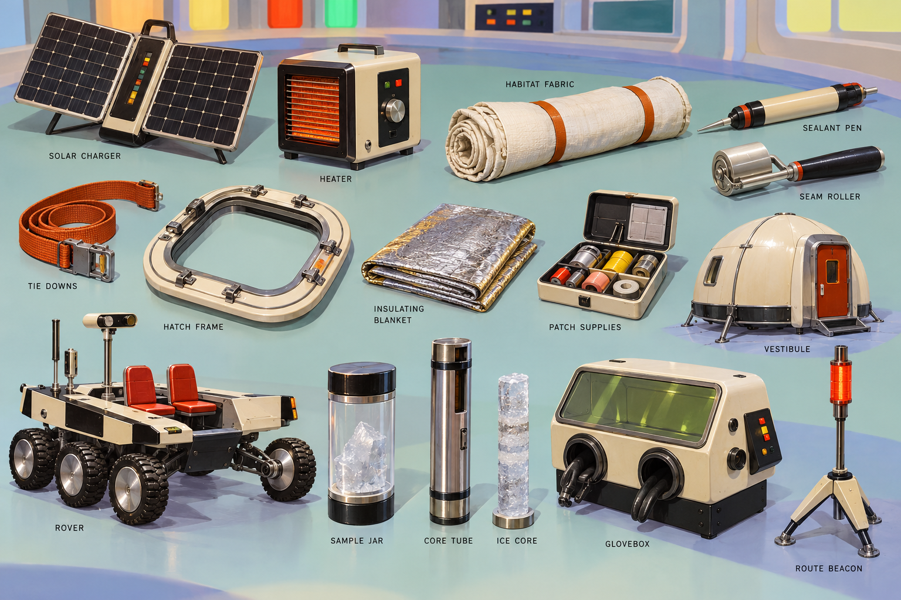
Optimistic shipboard prop design: cream molded shells, black details, glowing orange accents, clean stages.
Production issue: Coherent, approachable devices; the style must be made original rather than using franchise-specific badges and props.
Historical visual references: Museum of Pop Culture, original series tricorder Star Trek Blueprints, tricorder drawing
Star Wars: worn frontier equipment
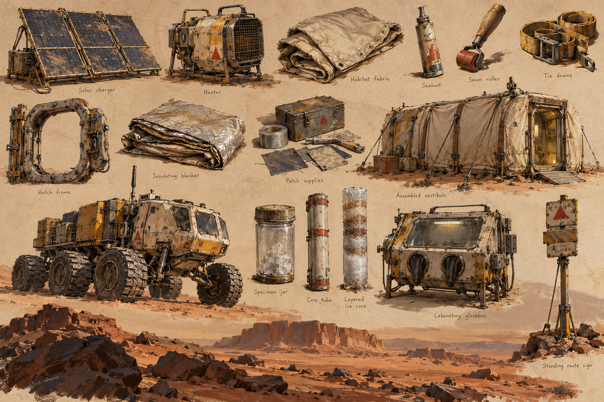
1970s production-painting sensibility: sand, graphite and gouache, grime, repair marks, oversized working machinery.
Production issue: Excellent fit for survival improvisation; do not let every object become equally brown or every repair look pre-existing.
Historical visual references: Lucas Museum, Ralph McQuarrie production art American Cinematographer, production design and used future
Raygun Gothic / Streamline Moderne
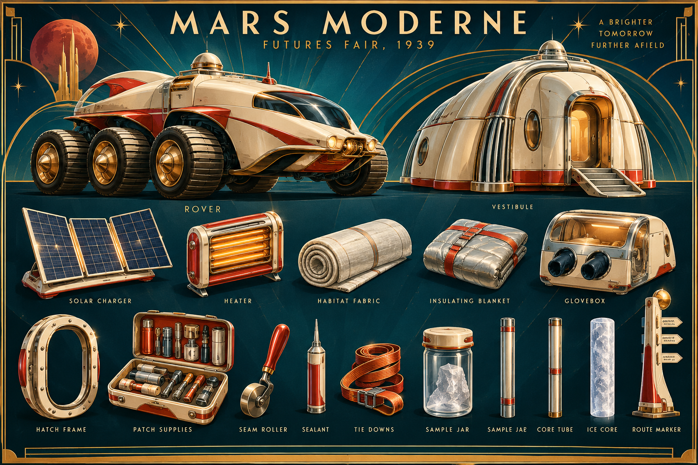
1930s world-fair future: enamel, chrome, sweeping streamlined fins, Deco geometry, lacquered luxury machines.
Production issue: The most distinctive silhouettes and a strong sense of playful invention; can undermine survival-story plausibility.
Historical visual references: Norman Bel Geddes, 1939 Futurama design archive Smithsonian, Arthur Radebaugh future illustrations
2001: A Space Odyssey industrial modernism
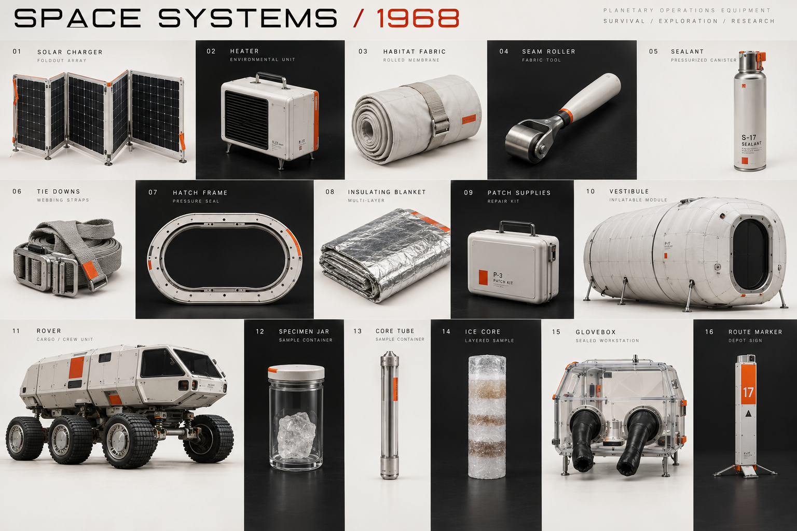
Clinical 1968 aerospace modernism: precise white shells, pure black fields, subtle red-orange safety markings.
Production issue: Wonderful hardware discipline and hierarchy; austere object photos can become visually repetitive across 200 items.
Historical visual references: Museum of the Moving Image, 2001 production design BBC Arts, Harry Lange visual design